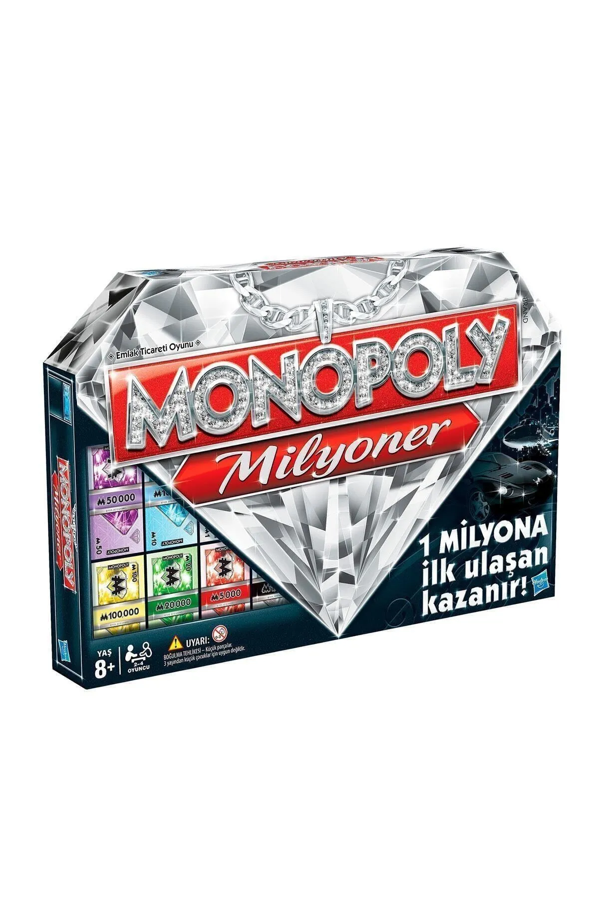

STANDART MONOPOLY’DEN FARKLI OLAN 4 KURAL
-
Nakit 1 milyon b’na sahip
olduğunuzda oyunu kazandınız
demektir.
Oyunu kazanmak için bir başka
oyuncuyu iflas ettirmenize
gerek yok; sadece mümkün
olduğunca hızlı servetinizi
1 milyona ulaştırmaya bakın.
-
Oyunu kazanma şansınızı artırmak
için piyonunuzu bir üst seviyeye
yükseltebilirsiniz.
Oyuna önce 1★ (Sermaye) seviyesinde başlarsınız ama 3★
(Geleceği Parlak) ya da 5★ (Lüks Hayat) seviyesine yükselebilirsiniz.
BAŞLANGIÇ noktasından geçtiğinizde piyonunuzu
bir üst seviyeye yükseltme
hakkına sahip olursunuz.
-
Oyunun başında her arsanın üzerinde
bir Servet kartı bulunur.
Oyuna başlamadan önce her arsanın
üzerine kapalı olarak bir Servet kartı
koyun. Üzerinde Servet kartı olan bir
hanenin üzerine geldiğinizde bu kartı
açın ve üzerinde yazan talimatları
yerine getirin.
-
Oyunda Milyoner Hayatı kartları da var.
Bu hanenin üzerinde durduğunuzda ilgili destenin en
üstündeki kartı çekin ve hayalini kurduğunuz hayatın
tadını çıkarın.